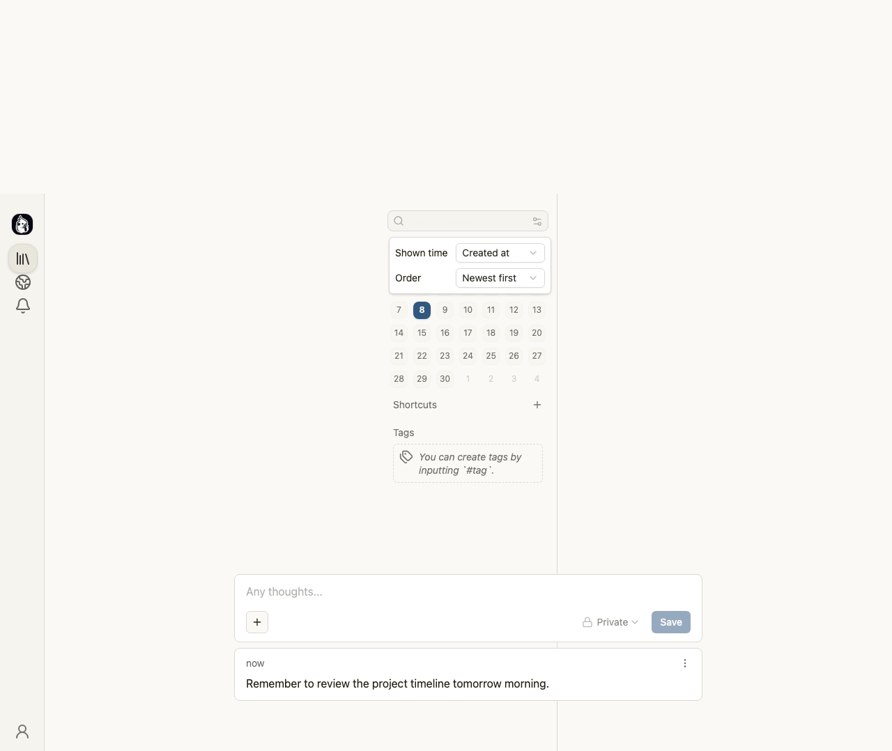

Second memo with hashtag was not created due to incorrect element targeting
high
logic
Goal
Verify that a user can successfully register as a Site Host, create a standard memo, and create a second memo that includes a hashtag tag.
Description
The test step intended to type 'Meeting notes for #team-sync' into the text area and save it. However, the automation script incorrectly targeted a button element instead of the text input field, causing the fill action to fail. As a result, the second memo was never created, and the hashtag functionality could not be verified.
Evidence
The error log shows: 'Element is not an <input>, <textarea>, <select> or [contenteditable]'. The BEFORE and AFTER screenshots are identical, showing only the first memo in the feed. The text area remains empty, and no new memo appears.
Reproduction steps
- Navigate to the main dashboard after creating the first memo.
- Attempt to type 'Meeting notes for #team-sync' into the text area.
- Observe that the automation script targets a button instead of the text input.
- Note that the fill action fails and no new memo is created.
